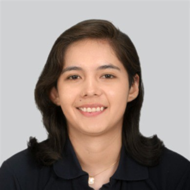

Ingeniera Electrónica, Desarrolladora Full Stack y Diseñadora UX/UI. Me apasiona conectar el mundo físico con el digital.
Quién soy y qué me impulsa
Soy Olga María Lopez Delgadillo, graduada con máximos honores en Ingeniería Electrónica y Telecomunicaciones por la Universidad Privada Boliviana (UPB) y especializada en Diseño UX/UI. Mi enfoque profesional reside en la intersección del software moderno, la inteligencia artificial y el desarrollo de hardware inteligente (IoT).
A lo largo de mi trayectoria académica y profesional, me he dedicado a crear tecnologías con propósito, aplicando inteligencia artificial y sistemas embebidos en el sector salud. Esta pasión me llevó a recibir el 1er Lugar del Premio Plurinacional de Ciencia, Tecnología e Innovación de Bolivia.
"El diseño no es solo cómo se ve, sino cómo funciona. Busco la síntesis perfecta entre una interfaz digital atractiva e intuitiva y un firmware óptimo y eficiente en el hardware. Creo en crear soluciones tecnológicas centradas en el usuario que verdaderamente simplifiquen y mejoren la calidad de vida de las personas."
Diseño de PCBs, IoT y Firmware en C/C++
React, Next.js, Node.js y Python (AI)
Una línea de tiempo detallada de mi recorrido y formación académica
Estudios enfocados en la experiencia del usuario, diseño de interfaces visuales avanzadas, prototipado y validación de productos digitales.
Galardonada en la categoría Jóvenes Investigadores por el desarrollo y la manufactura tecnológica enfocada en la transformación industrial y salud.
Graduada con mención sobresaliente. Proyecto de Grado: "Diseño y Optimización de Sistemas Embebidos para Aplicaciones en el Área de Salud en Bolivia" [Calificación: 100/100].
Implementación y testeo de redes inalámbricas de sensores, control de dispositivos IoT y elaboración de documentación técnica para publicaciones científicas.
Instalación y configuración de equipos de telecomunicaciones, sistemas de control de acceso y rastreo GPS vehicular.
Reconocimiento a mi dedicación y continuo aprendizaje profesional
Otorgado por el Ministerio de Planificación del Desarrollo de Bolivia en 2025.
Emitida por la UDI, cubriendo metodologías ágiles de diseño y experiencia de usuario.
Participación y desarrollo de soluciones basadas en LLMs y Visión por Computadora.